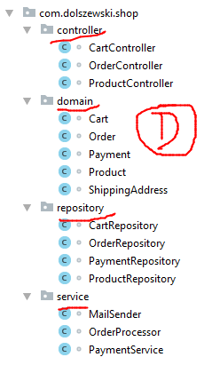
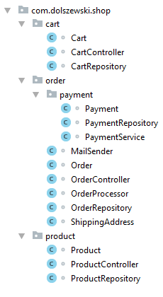
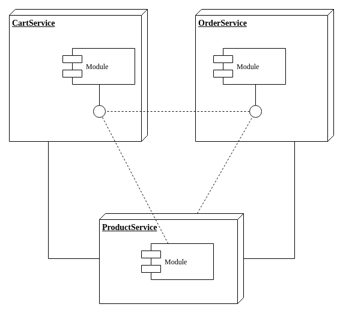

Alexandre Vandekerkhove
Conception d’un système formé d’éléments qui peuvent être assemblés puis séparément modifiés, retirés, ou ajoutés sans interférer avec le fonctionnement des autres éléments.
https://www.amba.fr/definition-architecture-modulaire-ref001103.html
→ Monolithe modulaire
 http://dolszewski.com/java/project-package-organization
Séparation par le réseau
Un module doit correspondre à un domaine métier et non technique.
- Objets
- Comportements
- Interactions
→ Privilégier une approche
événementielle
Fait passé du système.
CustomerCreated
Composants
Repenser les interactions !
Chorégraphie : approche décentralisée. Chaque service est autonome.
Principe de Postel
Be liberal in what you accept, and conservative in what you send.
→ Ne pas avoir peur de la duplication